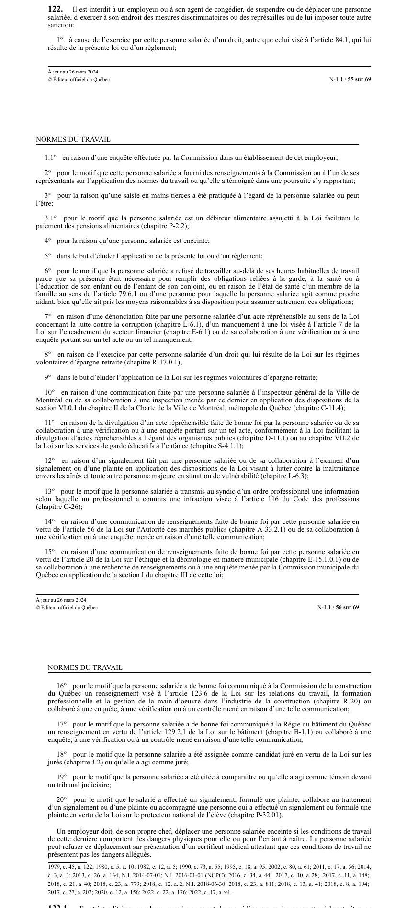

art-122-LNT : pratiques interdites (représailles)
Article qui interdit a l'employeur, ou a son agent, les mesures de représailles contre une personne salariée en raison de l'exercice d'un droit. Cette interdiction vise l'employeur.
- Mesures interdites : congédier, suspendre, déplacer, exercer des mesures discriminatoires ou des représailles, ou imposer toute autre sanction.
- Motif principal : l'exercice par la personne salariée d'un droit résultant de la loi ou d'un règlement, autre que celui visé a l'art. 84.1.
- La liste des motifs protégés est longue et énumérative : grossesse, saisie en mains tierces, enquête de la Commission, dénonciation d'actes répréhensibles, fonction de juré ou de témoin, refus de travailler au-dela des heures habituelles pour obligations familiales, entre autres.
- Obligation positive : l'employeur doit de son propre chef déplacer une personne salariée enceinte si ses conditions de travail comportent des dangers physiques pour elle ou pour l'enfant a naître ; elle peut refuser ce déplacement sur certificat médical.
- Le recours correspondant est la plainte pour pratique interdite (art. 123), a déposer dans les 45 jours.
🌐 LegisQuébec · 📄 PDF officiel (page 55)
Texte officiel
Il est interdit à un employeur ou à son agent de congédier, de suspendre ou de déplacer une personne salariée, d’exercer à son endroit des mesures discriminatoires ou des représailles ou de lui imposer toute autre sanction:
1° à cause de l’exercice par cette personne salariée d’un droit, autre que celui visé à l’article 84.1, qui lui résulte de la présente loi ou d’un règlement;
1.1° en raison d’une enquête effectuée par la Commission dans un établissement de cet employeur;
2° pour le motif que cette personne salariée a fourni des renseignements à la Commission ou à l’un de ses représentants sur l’application des normes du travail ou qu’elle a témoigné dans une poursuite s’y rapportant;
3° pour la raison qu’une saisie en mains tierces a été pratiquée à l’égard de la personne salariée ou peut l’être;
3.1° pour le motif que la personne salariée est un débiteur alimentaire assujetti à la Loi facilitant le paiement des pensions alimentaires (chapitre P‐2.2);
4° pour la raison qu’une personne salariée est enceinte;
5° dans le but d’éluder l’application de la présente loi ou d’un règlement;
6° pour le motif que la personne salariée a refusé de travailler au-delà de ses heures habituelles de travail parce que sa présence était nécessaire pour remplir des obligations reliées à la garde, à la santé ou à l’éducation de son enfant ou de l’enfant de son conjoint, ou en raison de l’état de santé d’un membre de la famille au sens de l’article 79.6.1 ou d’une personne pour laquelle la personne salariée agit comme proche aidant, bien qu’elle ait pris les moyens raisonnables à sa disposition pour assumer autrement ces obligations;
7° en raison d’une dénonciation faite par une personne salariée d’un acte répréhensible au sens de la Loi concernant la lutte contre la corruption (chapitre L-6.1), d’un manquement à une loi visée à l’article 7 de la Loi sur l’encadrement du secteur financier (chapitre E-6.1) ou de sa collaboration à une vérification ou à une enquête portant sur un tel acte ou un tel manquement;
8° en raison de l’exercice par cette personne salariée d’un droit qui lui résulte de la Loi sur les régimes volontaires d’épargne-retraite (chapitre R-17.0.1);
9° dans le but d’éluder l’application de la Loi sur les régimes volontaires d’épargne-retraite;
10° en raison d’une communication faite par une personne salariée à l’inspecteur général de la Ville de Montréal ou de sa collaboration à une inspection menée par ce dernier en application des dispositions de la section VI.0.1 du chapitre II de la Charte de la Ville de Montréal, métropole du Québec (chapitre C-11.4);
11° en raison de la divulgation d’un acte répréhensible faite de bonne foi par la personne salariée ou de sa collaboration à une vérification ou à une enquête portant sur un tel acte, conformément à la Loi facilitant la divulgation d’actes répréhensibles à l’égard des organismes publics (chapitre D-11.1) ou au chapitre VII.2 de la Loi sur les services de garde éducatifs à l’enfance (chapitre S-4.1.1);
12° en raison d’un signalement fait par une personne salariée ou de sa collaboration à l’examen d’un signalement ou d’une plainte en application des dispositions de la Loi visant à lutter contre la maltraitance envers les aînés et toute autre personne majeure en situation de vulnérabilité (chapitre L-6.3);
13° pour le motif que la personne salariée a transmis au syndic d’un ordre professionnel une information selon laquelle un professionnel a commis une infraction visée à l’article 116 du Code des professions (chapitre C-26);
14° en raison d’une communication de renseignements faite de bonne foi par cette personne salariée en vertu de l’article 56 de la Loi sur l'Autorité des marchés publics (chapitre A-33.2.1) ou de sa collaboration à une vérification ou à une enquête menée en raison d’une telle communication;
15° en raison d’une communication de renseignements faite de bonne foi par cette personne salariée en vertu de l’article 20 de la Loi sur l’éthique et la déontologie en matière municipale (chapitre E-15.1.0.1) ou de sa collaboration à une recherche de renseignements ou à une enquête menée par la Commission municipale du Québec en application de la section I du chapitre III de cette loi;
16° pour le motif que la personne salariée a de bonne foi communiqué à la Commission de la construction du Québec un renseignement visé à l’article 123.6 de la Loi sur les relations du travail, la formation professionnelle et la gestion de la main-d’oeuvre dans l’industrie de la construction (chapitre R-20) ou collaboré à une enquête, à une vérification ou à un contrôle mené en raison d’une telle communication;
17° pour le motif que la personne salariée a de bonne foi communiqué à la Régie du bâtiment du Québec un renseignement en vertu de l’article 129.2.1 de la Loi sur le bâtiment (chapitre B-1.1) ou collaboré à une enquête, à une vérification ou à un contrôle mené en raison d’une telle communication;
18° pour le motif que la personne salariée a été assignée comme candidat juré en vertu de la Loi sur les jurés (chapitre J-2) ou qu’elle a agi comme juré;
19° pour le motif que la personne salariée a été citée à comparaître ou qu’elle a agi comme témoin devant un tribunal judiciaire;
20° pour le motif que le salarié a effectué un signalement, formulé une plainte, collaboré au traitement d’un signalement ou d’une plainte ou accompagné une personne qui a effectué un signalement ou formulé une plainte en vertu de la Loi sur le protecteur national de l’élève (chapitre P-32.01).
Un employeur doit, de son propre chef, déplacer une personne salariée enceinte si les conditions de travail de cette dernière comportent des dangers physiques pour elle ou pour l’enfant à naître. La personne salariée peut refuser ce déplacement sur présentation d’un certificat médical attestant que ces conditions de travail ne présentent pas les dangers allégués.
Texte de l’article 122 LNT, extrait de la couche texte du PDF officiel (page 55), sans OCR ni retouche. La capture ci-dessous et le PDF font foi.
{kind=link}

Toucher l'image pour l'agrandir🔗 Ouvrir a cette page : LNT.pdf : page 55 · texte a jour au 26 mars 2024
Jurisprudence
- Bhaskaran c. Tribunal administratif du travail (2020 QCCS 2878)
Voir aussi
- art. 97 · l'aliénation ou la concession, totale ou partielle, de l'entreprise, ou la modification de sa structure juridique (fusion, division, etc.) n'affecte pas la continuité de l'application des normes du travail.
- art. 123 · plainte pour pratique interdite a la CNESST, dans les 45 jours de la pratique reprochée.
- ↑ Loi : LNT
Pages qui pointent ici (12)
- art-115-LNT : prescription de l'action civile Recueil législatif
- art-123-LNT : plainte pour pratique interdite Recueil législatif
- art-97-LNT : continuité des normes lors d'un transfert Recueil législatif
- Avertissement, suspension ou congédiement, ce que ton boss a le droit de faire Droit du travail
- Bhaskaran c. Tribunal administratif du travail Recueil législatif
- Index des décisions : table de travail Recueil législatif
- Index thématique des décisions Recueil législatif
- LNT Recueil législatif
- LNT : Chapitre VIII : Recours (CNESST, TAT) Recueil législatif
- PDFs de jurisprudence et de doctrine Recueil législatif
- Représailles Recueil législatif
- Tes heures, tes vacances et tes congés quand tu travailles en rotation Droit du travail